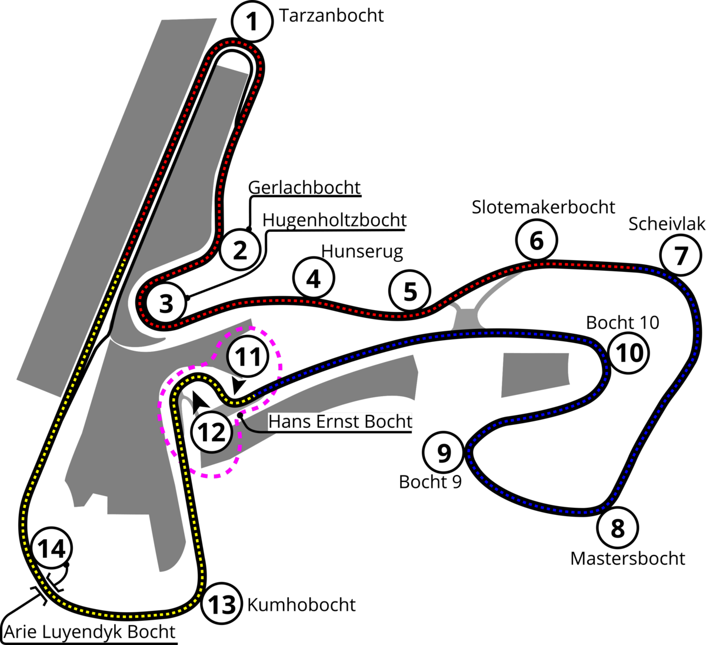
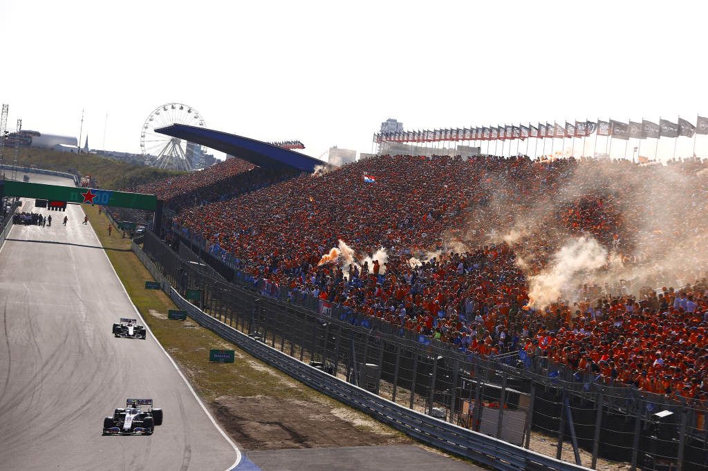

The Dutch Grand Prix is set to return to Circuit Zandvoort from Friday, August 29 to Sunday, August 31, 2025, marking the 15th round of the Formula 1 season. The weekend will kick off with practice sessions on Friday, followed by FP3 and qualifying on Saturday, and culminating in the main race at 15:00 CEST (09:00 ET) on Sunday. The seaside circuit, nestled just thirty minutes from Amsterdam, promises a vibrant and electric atmosphere, especially with the enthusiastic support of the “Orange Army.” McLaren arrives riding high on momentum, with team boss Andrea Stella signaling they expect to continue their dominance at Zandvoort. Meanwhile, both Red Bull and Ferrari are cautiously optimistic, tweaking car setups to balance downforce and handling for the narrow, twisty layout of the Dutch track.
Max Verstappen will undoubtedly be the center of attention at his home Grand Prix, making this his penultimate appearance at Zandvoort before the venue departs from the F1 calendar after 2026. Despite a challenging season, he remains determined to delight his hometown fans with a strong showing over the weekend. Concerns about track damage surfaced recently when a viral image suggested flooding and a hole on the circuit—but officials swiftly confirmed the track is fully intact and ready for racing. Fans can look forward to support events like the F1 Academy series and the Porsche Mobil 1 Supercup adding to the on-track excitement throughout the weekend. As one of the season’s most atmospheric and passionate stopovers, the Dutch GP promises to deliver drama, speed, and plenty of emotion before its departure from the calendar.
| Driver | Team |
|---|---|
| Lando Norris | McLaren |
| Max Verstappen | Red Bull Racing |
| Oscar Piastri | McLaren |
Official Formula 1 — Dutch Grand Prix
Circuit Zandvoort — Official Site